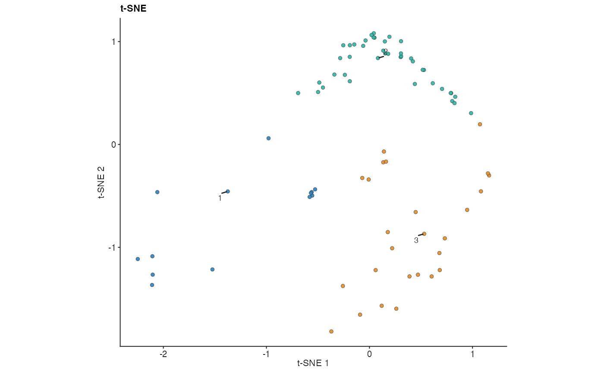
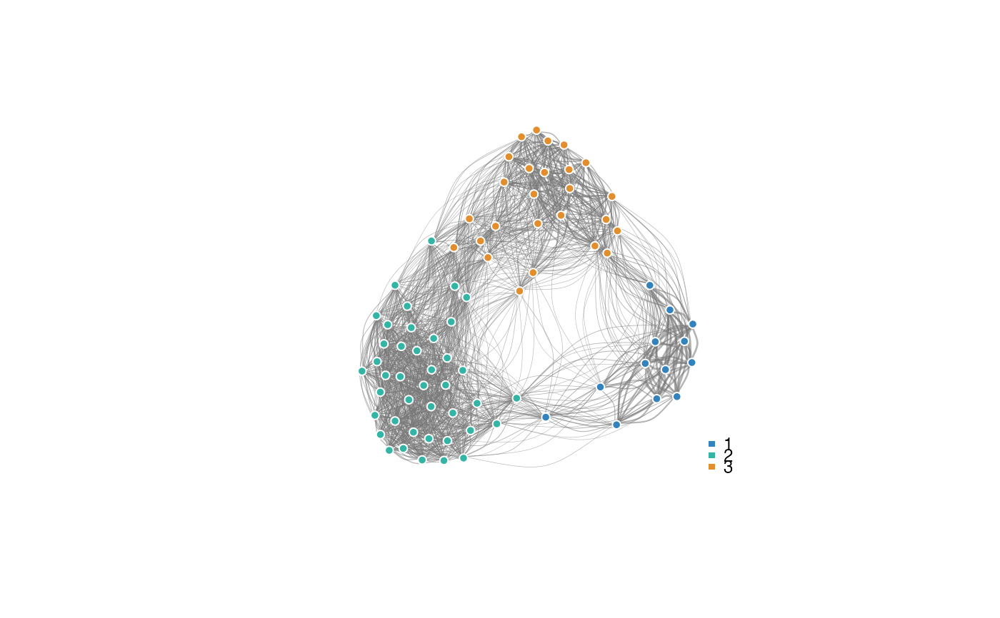
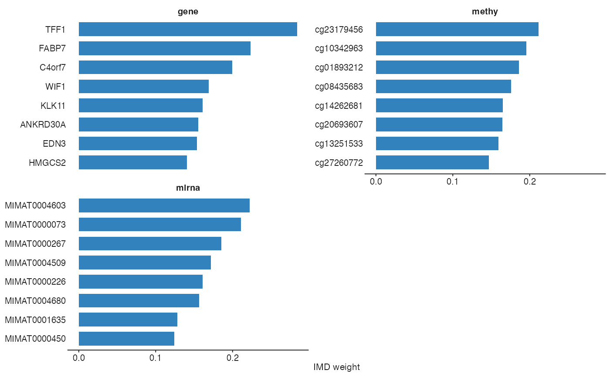
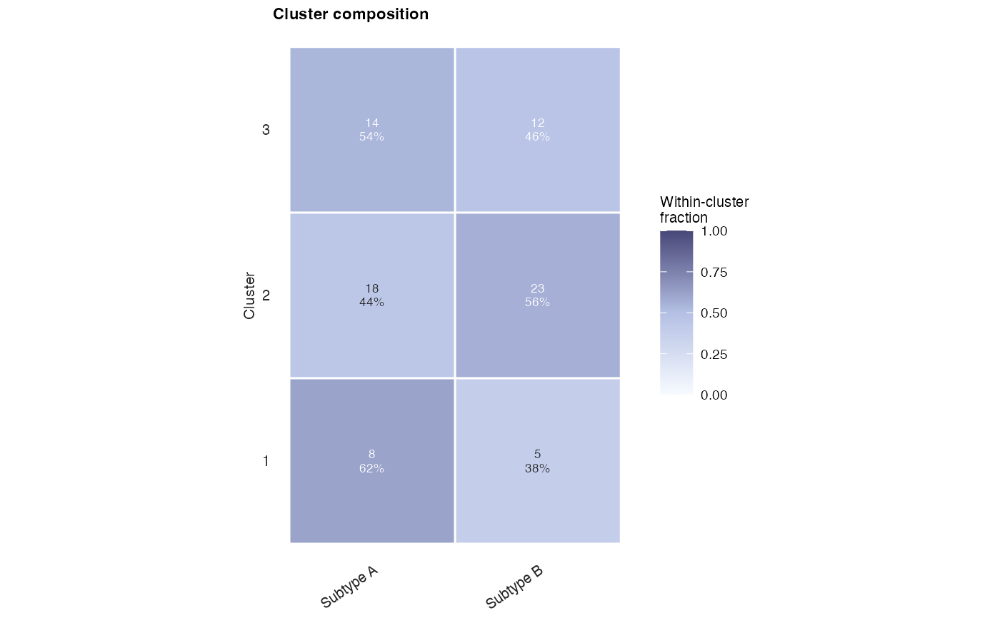
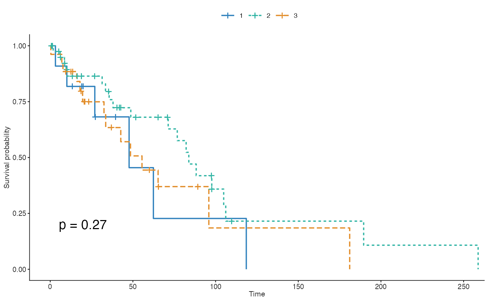

Plot an mrf3_fit object
plot.mrf3_fit.RdUnified plotting entry point for fitted multiRF pipelines. The method
extracts the components each display needs from the fit (the learned
sample similarity, cluster labels via get_clusters(), IMD weights via
get_weights(), pairwise feature adjacency via pairwise_imd()) and
forwards them, together with ..., to the corresponding exported plot
function, so every option of the underlying function stays reachable.
Arguments
- x
An
mrf3_fitobject returned bymrf3_fit()(ormrf3()).- type
Plot type; one of
"tsne","umap","embed","network","circos","composition","km","weights". Defaults to"tsne".- ...
Additional arguments forwarded to the target plot function (e.g.
seed,perplexity,cutoff,top,source,omics,group,cut.off,risk.table). Fortype = "circos",feature_sourceandnormalizedare forwarded topairwise_imd(). Fortype = "embed",embed_dimssets the number of principal components displayed.- annotation
Required for
type = "composition": a vector or factor of external sample annotations (e.g. tumour subtypes), one value per sample and in the same sample order as the fitted data. The fit itself stores no annotations.- time_var
Required for
type = "km": name of the survival/follow-up time column inpheno_mat.- event_var
Required for
type = "km": name of the binary 0/1 event column inpheno_mat.- pheno_mat
Required for
type = "km": data frame of sample-level phenotype data containingtime_varandevent_var, with one row per sample in the same sample order as the fitted data.
Value
Whatever the target plot function returns: a ggplot object for
"tsne", "umap", "composition", and "weights"; a ggsurvplot
object for "km"; invisibly, an igraph object for "network", the
chord-diagram data for "circos", and NULL for "embed".
Details
Supported type values and their targets:
"tsne"(default):plot_tsne()on the fitted similarity matrix (native t-SNE), coloured by shared cluster."umap":plot_umap()on the fitted similarity matrix."embed": deprecated pairs display viaplot_embed(), drawn on the top principal components of the fitted similarity matrix (control the number of components withembed_dims, default 3)."network":plot_network()sample network from the fitted similarity matrix, vertices coloured by shared cluster."circos":pairwise_imd()on the fit, thenplot_circos()of the feature-level adjacency (source = "adj_var"by default). Requires IMD (run_imd = TRUE) and retained models (compact_output = FALSE)."composition":plot_cluster_composition()of shared clusters against a user-suppliedannotationvector."km":plot_km()Kaplan–Meier curves of the shared clusters; the fit holds no survival data, sotime_var,event_var, andpheno_matmust be supplied."weights":plot_weights()of the per-block IMD weights. Requiresrun_imd = TRUE(or cluster-level IMD viarun_cluster_imd = TRUE).
For every type the default sample grouping is get_clusters(x); pass
group through ... to override it (for "tsne", "umap", "embed",
"network", "composition", and "km"). When source = "robust_clustering" is passed through ..., robust cluster labels are
used instead, and source = "specific_specific" with omics uses that
block's specific cluster labels.
Cluster colours are consistent across all types: cluster ids are mapped in
sorted order onto a fixed colour-blind-safe palette (the same palette the
individual plot functions use), so cluster 2 has the same colour in the
t-SNE, network, and Kaplan–Meier displays. A user-supplied colour setting
passed through ... (for example palette for "km" or colours for
"composition") always wins over this default, and the returned ggplot
objects accept a replacement scale_fill_manual() /
scale_colour_manual().
Examples
# \donttest{
data("tcga_brca_data", package = "multiRF")
ids <- rownames(tcga_brca[[1]])[seq_len(80)]
dat <- lapply(tcga_brca, function(x) {
x[ids, seq_len(min(30L, ncol(x))), drop = FALSE]
})
fit <- mrf3_fit(
dat,
ntree = 30,
filter_mode = "none",
clustering_args = list(shared_k = 3),
run_imd = TRUE,
return_data = TRUE,
filter_verbose = FALSE,
verbose = FALSE,
seed = 529
)
#> Auto model_top_v `tmax` = 80 (n = 80).
#> Auto fused_top_v `vmax` = 80 (n = 80).
#> Using pre-computed IMD weights from native engine (zero extra cost).
## Embeddings and networks of the learned similarity
plot(fit, type = "tsne", seed = 529)

plot(fit, type = "network", seed = 529)

## IMD feature weights
plot(fit, type = "weights", top = 8)

## Cluster composition against an external annotation
annotation <- factor(rep(c("Subtype A", "Subtype B"), length.out = 80))
plot(fit, type = "composition", annotation = annotation)

## Kaplan-Meier curves need user-supplied survival data
if (requireNamespace("survival", quietly = TRUE) &&
requireNamespace("survminer", quietly = TRUE)) {
pheno <- data.frame(
os_time = stats::rexp(80, rate = 1 / 50),
os_event = stats::rbinom(80, 1, 0.6)
)
plot(fit, type = "km", time_var = "os_time", event_var = "os_event",
pheno_mat = pheno, risk.table = FALSE)
}
#> Warning: Using `size` aesthetic for lines was deprecated in ggplot2 3.4.0.
#> ℹ Please use `linewidth` instead.
#> ℹ The deprecated feature was likely used in the ggpubr package.
#> Please report the issue at <https://github.com/kassambara/ggpubr/issues>.

# }